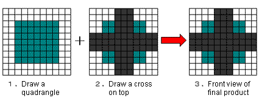
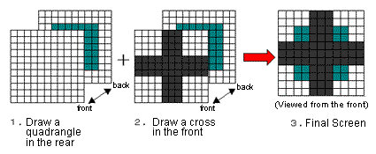
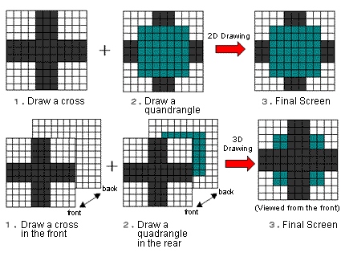
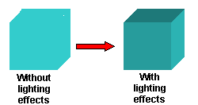
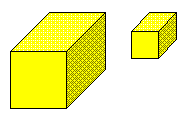

Basically, when you're working with 3D computer graphics, you're drawing pictures in a virtual three-dimensional space created in a computer, so your two-dimensional drawings have added depth information. For example, when you draw a two-dimensional picture on a computer, you draw dots by specifying the color of each pixel (picture element) with graphic tools as in this illustration:

However, when drawing a three-dimensional picture, you draw dots that have both color and depth (z axis) information. Because of this additional depth information, objects that lie behind other objects are partially or completely hidden as illustrated here:

It looks like there is no difference between the two-dimensional final screen and the three-dimensional final screen. But the difference is obvious if you change the drawing order as shown here:

Because the two-dimensional picture does not have the depth information, a picture drawn on top of another picture always wipes out what is underneath it. However, because the three-dimensional picture has depth information, the relationship between two objects holds regardless of the drawing order.
Three-dimensional objects are also affected by lighting and perspective -- two characteristics that don't apply to two-dimensional objects. As light falls on a three-dimensional object, some parts are lit up and other parts are dark or in the shadows. It all depends on the source and intensity of the light. Also, objects that are far away appear relatively small and appear to grow larger as they move closer and closer. To make objects appear three-dimensional, you need to apply these visual effects.
The following illustrates 3D lighting effects:

Because 3D graphics data includes three-dimensional information, you can use computer calculations to apply appropriate 3D lighting and perspective effects. Moreover, you can use calculations to rotate and scale objects. These kinds of data manipulations by computer calculation are called transformations.
The following illustration shows how the size of an object can make it appear closer or farther away:

Nintendo® Confidential
Copyright © 1999
Nintendo of America Inc. All Rights Reserved
Nintendo and N64 are registered trademarks of Nintendo
Last Updated March, 1999